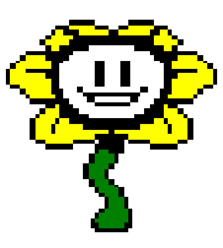

Text


Different forms of writing can be considered an art as much as images. Commonly known examples are graffiti and calligraphy, but pixel art is another form of font style art that can be overlooked. It gives off a vintage feel, like old arcade games, and game developers take advantage of this nostalgiac feeling in their art.